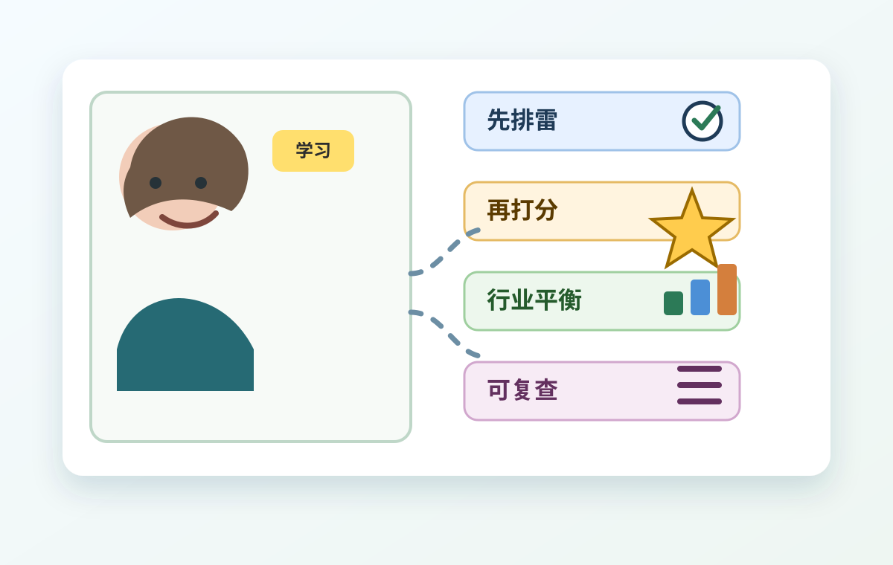

不是直接买
核心600只是候选池。进入候选池，意思是“可以继续研究”，不是“马上买入”。
给普通投资学习者的量化入门
目标不是追热点，而是从几千只A股里，先找出更可能代表中国经济核心资产的候选公司： 能赚钱、能活久、风险可查、价格不过分离谱。

先抓住一句话
核心600只是候选池。进入候选池，意思是“可以继续研究”，不是“马上买入”。
每个判断都要有数据来源、日期和理由，不能用印象凑出600只。
短期涨得多不等于公司好。系统会同时看财务、估值、趋势和风险。
第一性原理
股票背后是公司。真正值得长期研究的公司，通常不是因为一两天涨得快， 而是因为它长期能创造现金流、能穿越周期，并且风险足够透明。
收入和利润不是偶然爆发，经营现金流能跟上利润，说明钱更可能是真的进来了。
品牌、渠道、技术、成本、牌照或规模优势，让公司不容易被同行快速替代。
负债、审计意见、停牌、退市风险、数据缺失都要检查。看不清，就先不碰。
再好的公司，如果价格过度透支未来，长期回报也可能不好。
三步看懂
ST、退市风险、长期停牌、关键财务数据缺失、上市时间太短，都先放到一边。
拿不到风险资料时，标记“待核查”，不能当作没风险。
质量、成长、估值、动量、低波动与流动性五类一起看，不让一个指标说了算。
核心资产分布在不同产业里。不能全是电子、机械或热门行业，避免一阵风把池子带偏。
600 × 15% = 90，这是行业上限的直观算法。
五个观察镜头
最后输出什么
股票代码、名称、行业、综合得分、行业内排名。
质量、成长、估值、趋势、波动、流动性的原始数据和标准化分数。
为什么进入、为什么没进、哪些风险还需要人工复核。
缺失率、异常值、公告日期、是否存在未来数据风险。
最容易踩的坑
回头测试过去的选股结果时，只能用当时已经公开的信息，不能用后来才公布的财报。
历史回测要包含后来退市的股票，否则结果会显得过分好看。
亏损公司的PE可能是负数，但这不代表估值低。
关键财务数据缺失，要报告缺失，不能静悄悄补成0。
常见术语
就是评价股票的一个角度。比如赚钱能力、增长速度、价格贵不贵、最近趋势稳不稳。
看一家公司现在的价格相对它的利润、资产、收入是不是合理。便宜不一定好，贵也不一定坏。
看股票中期走势是否比同行更强。这里不追一个月暴涨，而是看更稳的中期趋势。
就是回头测试过去时，偷用了当时还没公开的信息。这样结果会显得很好，但现实中做不到。
只看现在还在上市的公司，忘了历史上失败和退市的公司，会让测试结果虚高。
长期能创造价值、风险相对可查、在行业里有稳定位置的公司。它仍然可能下跌，所以不能等同于“稳赚”。
当前工程进度
数据路线
BaoStock、AKShare 等公开数据源适合学习和研究。好处是成本低，能先把流程跑通。
免费数据暂时覆盖不到的审计意见、公告细节、行业口径，要标记为“待核查”，不能默认安全。
如果要做更严肃的研究，再接 Tushare、Choice、Wind 或其他商业数据，替换数据源即可。